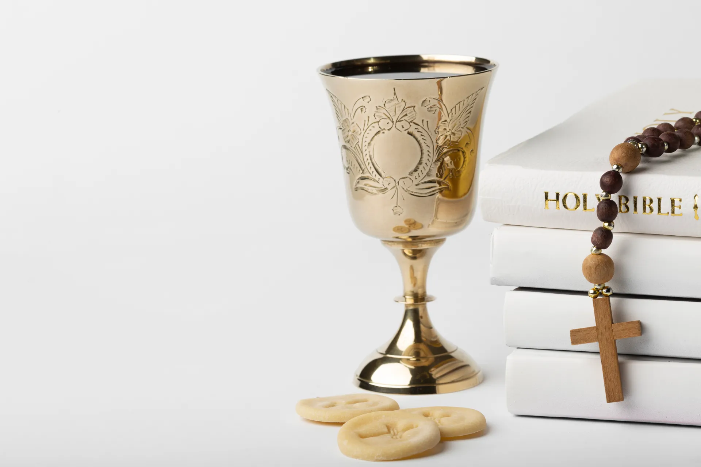
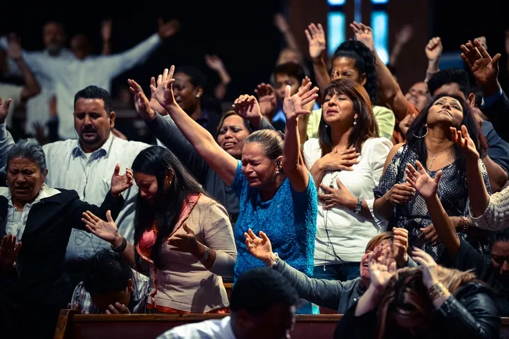

Notre Identité
Une institution catholique enracinée dans la foi, la miséricorde et l'excellence du service au Christ et aux hommes.
Notre Vision
Être un phare spirituel et d'excellence, inspirant chaque âme à s'engager pour le Christ.
Nos Valeurs
Miséricorde, Sainteté, Excellence du Service, Fraternité et Intégrité au quotidien.
Notre Mission
Former des disciples fervents et bâtir une communauté unie pour servir avec excellence.
Accompagnement
Un suivi spirituel et humain personnalisé pour grandir sereinement dans la foi.
Ce qui nous distingue
La Mission Catholique MCM s'engage à offrir une dimension institutionnelle et professionnelle au service du Seigneur.
Accompagnement Spirituel
Chaque membre bénéficie d'un suivi spirituel et humain personnalisé pour grandir dans sa foi et sa vocation.
En savoir plus
Formation Continue
Des cycles de formation doctrinale et de leadership pour outiller nos responsables et éveiller le leadership spirituel.
En savoir plusInnovation & Digital
L'utilisation des technologies modernes pour propager l'Évangile efficacement et rester connectés au monde.
En savoir plusLa mission en chiffres
Des actions concrètes et une croissance spirituelle visible au fil des années.
Disciples engagés dans la communauté
Pôles d'actions pastorales et administratives
Ministères intérieurs actifs et dévoués
De grâce, de service et d'évangélisation
Œuvres sociales, retraites et conférences
Nos pôles d'action
Découvrez les grands domaines d'activité à travers lesquels nous servons le Christ et notre prochain.
Formation
Études bibliques, catéchèse supérieure et parcours doctrinal pour fortifier l'esprit et la foi.
DécouvrirService
Entraide sociale, charité de proximité et logistique des célébrations liturgiques.
DécouvrirLouange
Chants sacrés, adoration instrumentale et conduite musicale de la prière communautaire.
DécouvrirÉvangélisation
Annonce active de l'Évangile, missions extérieures et accueil des nouveaux fidèles.
DécouvrirCommunication
Créations multimédia, retransmissions en direct et gestion de notre présence digitale.
DécouvrirAdministration
Gestion institutionnelle, coordination des commissions et pilotage de la vision globale.
DécouvrirNotre fonctionnement
Découvrez les différentes étapes pour vous intégrer et grandir au sein de notre structure.
Visiteur
Vous découvrez nos assemblées et notre atmosphère de prière en toute liberté.
Membre
Vous vous engagez régulièrement dans la vie de foi et la fraternité communautaire.
Commission
Vous intégrez l'une des 8 commissions spécialisées de la MCM selon vos dons.
Service
Vous mettez vos compétences au service d'actions concrètes et transformatrices.
Responsabilité
Vous prenez la tête de projets ou de sous-groupes dans votre domaine d'action.
Leadership
Vous guidez et inspirez la communauté dans sa vision globale et son rayonnement.
Nos Réalisations
Retour en images sur les réalisations marquantes et la vie de notre communauté.

Ce qui se passe actuellement
Participez à nos prochains moments forts et fortifiez votre cheminement spirituel.
Forum d'Excellence MCM 2025
Une journée de réflexion, d'enseignements et de prière pour outiller les disciples à briller dans la société.
S'inscrireRetraite de ressourcement
Un temps privilégié d'intimité avec Dieu et de confessions pour se régénérer spirituellement.
Assemblée Générale des Commissions
Rencontre de bilan et de planification pour le prochain trimestre avec tous les responsables.
Les témoignages
Découvrez l'impact de la communauté à travers l'expérience vécue par nos membres.
Depuis que j'ai rejoint la MCM, mon cheminement de foi a pris une tout autre dimension. L'esprit d'excellence dans le service m'a poussé à me dépasser, tant spirituellement que professionnellement.
L'accueil fraternel et l'accompagnement personnalisé m'ont aidé à traverser des périodes de doute. Je me sens soutenu et pleinement intégré dans ce grand corps institutionnel.
Les formations doctrinales et de leadership dispensées à la MCM m'ont permis de mieux comprendre ma vocation chrétienne et de l'assumer fièrement dans mon quotidien professionnel.
Rejoignez notre communauté
Nous sommes là pour vous accueillir avec amour et fraternité. Écrivez-nous pour toute question, pour rejoindre notre famille ou pour collaborer à notre mission.
Envoyez-nous un message
Réponse garantie sous 48 h